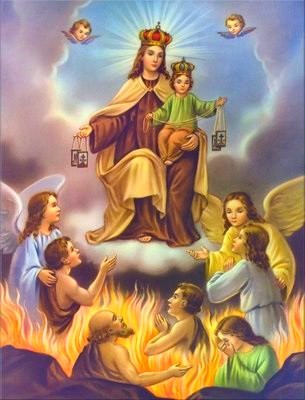
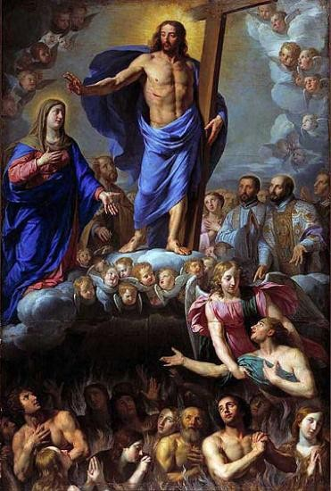

Gebete für die Armen Seelen

Wenn man wüsste, welche Macht diese lieben Armen Seelen über das Herz Gottes haben, und wenn man wüsste, welche Gnaden man durch ihre Fürbitte erlangen kann, sie wären nicht so vergessen; man muss viel für sie beten, damit sie viel für uns beten.
Hl. Johannes-Maria Vianney, Pfarrer von Ars
Die Zeit, Gott zu suchen, ist dieses Leben.
Die Zeit, Gott zu finden, ist der Tod.
Die Zeit ihn zu besitzen, ist die Ewigkeit.
Franz von Sales (1567–1622)
«Ach», pflegte Anna Katharina Emmerich zu sagen, «es haben die Armen Seelen so viel zu leiden wegen ihrer Nachlässigkeit, wegen bequemer Frömmigkeit, wegen Mangels an Eifer für Gott und das Heil des Nächsten. Wie soll ihnen geholfen werden, wenn nicht durch genügende Liebe, welche für sie jene Tugenden aufopfert, die sie selbst im Leben besonders vernachlässigt hatten? Die Heiligen im Himmel können nicht mehr für sie büßen und genugsam tun; das haben sie von den Kindern der Streitenden Kirche zu erwarten. Und wie sehr sehnen sie sich danach! Sie wissen, dass kein guter Gedanke, kein ernster Wunsch, den ein Lebender für sie hat, ohne Wirkung ist; und doch, wenige kümmern sich um sie...! Wer dies alles so sehen könnte wie ich, der würde gewiss nach Kräften zu helfen suchen.»
Anna Katharina Emmerich
«Unsere Toten gehören zu den Unsichtbaren, aber nicht zu den Abwesenden.»
Papst Johannes XXIII. (1881–1963)
«Wir glauben an die Gemeinschaft der Christgläubigen:
derer nämlich, die hier auf Erden pilgern; derer, die nach Abschluss des Erdenlebens im Jenseits geläutert werden;
und derer, welche die himmlische Seligkeit schon genießen; sie alle bilden zusammen die eine Kirche.»
Papst Paul VI. im «Credo des Gottesvolkes»
"Sage den Priestern, sie sollen den Exorzismus beten über die heutigen Feinde der hl. Kirche! Wenn die Priester wüssten, welche Macht ich ihnen gebe durch diese Beschwörung, so könnten sie den Feind der Kirche fernhalten!" (26.11.1956, Offenb. an Mutter Graf)
Wie wunderbar muss doch der Himmel sein, dass Gott eine so peinlich genaue Reinigung der Seelen vornimmt.
Katharina von Siena

Offenbarungen Jesu an einen Priester
«Die Hilfe für die wartenden Armen Seelen ist notwendiger als die Hilfe für die auf Erden am stärksten leidende menschliche Kreatur.»
Diese Worte hatte Jesus am 22. September 1975 an einen italienischen Priester gerichtet (entnommen dem Buch «Du weißt, dass ich dich liebe – Offenbarungen Jesu an einen Priester», Parvis-Verlag, CH-1648 Hauteville/Schweiz).
Um den Zusammenhang zu verstehen, drucken wir nachstehend einen kurzen Abschnitt aus diesem Buch ab, worin Jesus erklärt, warum wir uns um die Armen Seelen kümmern müssen: ganz einfach deshalb, weil wir zur «Familie Gottes» gehören und als solche zusammenhalten müssen:
«In jeder in der Liebe lebenden Familie trägt jedes ihrer Glieder zum gemeinsamen Wohl bei in einem Austausch von empfangenen und erwiesenen Wohltaten. In einem weit höheren Grad verhält es sich so in der großen Familie aller Gotteskinder, der Streitenden Kirche auf Erden, der Leidenden Kirche im Fegfeuer und der Triumphierenden Kirche im Paradies. Um den Glauben an diese göttliche und menschliche Wirklichkeit, die aus meinem Opfertod am Kreuz stammt, an göttlichen Früchten stets reicher zu gestalten, ist es nötig, klare Ideen über sie zu besitzen. Es ist notwendig:
fest zu glauben an das Dogma der Gemeinschaft der Heiligen;
dass die Priester, wenn sie über die Familie der Kinder Gottes sprechen, klar zum Ausdruck bringen müssen, dass die auf der Erde Pilgernden zu dieser Familie ebenso gehören wie die wartenden Seelen im Fegfeuer und die Gerechten im Himmel, das heißt die Heiligen;
dass die Priester ihre Brüder und Schwestern, die sich im Fegfeuer befinden, nicht vergessen.
(Viele Priester setzen den Akzent fast ausschließlich auf soziale Fragen und bedauern mit Recht die den Menschen auf dieser Erde zugefügten Ungerechtigkeiten.)
Eine derart schwerwiegende Unterlassung kann nur entstehen, wenn man weder an das Fegfeuer noch an die erschütternden Leiden glaubt, denen die Seelen während der Läuterung unterworfen werden.
Darum ist eure Pflicht der Liebe und Gerechtigkeit gegenüber den leidenden Seelen um so größer, wenn, was nicht selten ist, Seelen im Fegfeuer sind, die wegen der Schuld eures schlechten Beispiels leiden. Denn mit ihnen seid ihr mitschuldig am Bösen und an jeder Gelegenheit zur Sünde.»
Gottesschau in ewiger Glückseligkeit im Himmel – oder Gottesferne in ewiger Verdammnis in der Hölle: Dieses uns in der Heiligen Schrift klar geoffenbarte «Entweder–Oder» wartet auf jeden Menschen als ewige Vergeltung nach dem Tod und dem persönlichen Gericht, dem jeder Mensch sich stellen muss.
Prof. Dr. Ferdinand Holböck
Warum Gott unsere Gebete für die Armen Seelen «augenblicklich» erhört
Anna Katharina Emmerich, zweifellos eine der größten Mystikerinnen der Welt, schreibt:
«Oh, es ist traurig, dass so wenig den Armen Seelen geholfen wird; jedes für sie aufgeopferte Werk, Almosen oder Leiden, kommt ihnen augenblicklich zugute; sie sind dann so froh, so selig wie ein Verschmachtender, dem ein frischer Trunk gereicht wird.»
Man beachte das Adverb «augenblicklich»! Warum lässt Gott, dessen Mühlen doch normalerweise sprichwörtlich langsam mahlen, unsere guten Werke den Armen Seelen «augenblicklich» zugute kommen? Wer gründlich darüber nachdenkt, wird selbst darauf stoßen: Weil nämlich Gott – menschlich gesprochen – auch voller Sehnsucht darauf wartet, bis die Seelen, die ja nach seinem Bild und Gleichnis erschaffen worden sind, endlich vollkommen rein werden, dass er sie an sein Vaterherz drücken kann! Hier liegt auch der Grund dafür, warum die Armen Seelen eine so große Macht haben. Wenn wir ihnen helfen, kommen sie schneller an ihr Ziel und weil das – immer menschlich gesprochen – auch im Interesse Gottes liegt, ist er bereit, dafür einen Preis zu zahlen, d.h. uns zu helfen. Hier haben wir die Erklärung dafür, warum die Armen Seelen einen so großen Einfluss haben bei Gott – kein Jota für sich, aber alle Macht für uns.
Und wenn unsere Prediger, statt sich vorwiegend mit Psychologie und Mitmenschlichkeit abzuquälen, den Menschen die Wahrheit über die Armen Seelen und all die anderen großen Glaubenswahrheiten sagen würden, dann hätten wir bald wieder volle Kirchen.
Und du, lieber Mitmensch, wenn du nicht an diese Wahrheit glaubst, dann mache doch einen Test: Wenn du in einer Sache, die dir schwer zu schaffen macht, Hilfe brauchst, dann versprich den Armen Seelen ein Opfer, das dich einiges kostet.
Bete innig zu Gott, dass Sein Wille geschehen möge, und du wirst sehen, die Armen Seelen werden dich nicht im Stich lassen, es sind die besten und treuesten Freunde, die dir Gott auf dieser Erde gegeben hat.
Was hilft den Armen Seelen?
Die wertvollste Hilfe ist zweifellos das hl. Messopfer, aber nur insoweit, als es die betreffenden Verstorbenen während des Lebens geschätzt haben.
Eine weitere grosse Hilfe für die Armen Seelen ist das Weihwasser, wenn wir es mit Glauben und Vertrauen verwenden.
Auch durch das Rosenkranzgebet für die Armen Seelen empfehlen wir diese der mächtigen Fürbitte der allerseligsten Jungfrau und Gottesmutter, die eine besondere Schutzherrschaft über das Fegefeuer ausübt.
Das Kostbare Blut ist die wirksamste Hilfe für die Armen Seelen
(Quelle: "Die Stimme des Kostbaren Blutes" v. Sr. Michaela Hutt mit IMPRIMATUR! Bitte kaufen Sie dieses sehr empfehlenswerte Buch: Heilig-Blut-Gemeinschaft, Kirchberg 32, 88364 Wolfegg-Alttann)
"Folgen wir dem Beispiel der heiligen Magdalena von Pazzi und sprechen wir oft im Tage das folgende kräftige Gebetlein: "Ewiger Vater, ich opfere Dir, durch die Hände der allerseligsten Jungfrau Maria, das Kostbare Blut Deines Sohnes für die armen Seelen auf." Der Heiland sagte einst zur heiligen Mechthild: "Ich besiege den Zorn meines Vaters und versöhne durch mein Blut den Menschen mit seinem Gott." Besonders geschieht dies im heiligen Messopfer, wo dieses Blut von neuem vergossen wird. Dem seligen Heinrich Suso erschien einst eine arme Seele und rief ihm zu: "Blut, Blut, Bruder, ist nötig, damit uns Linderung werde. Messen, Messen, wie wir einander versprochen haben, sollen gelesen werden!" Machen wir es uns zur Gewohnheit, so oft wir der heiligen Messe beiwohnen, dem ewigen Vater das Kostbare Blut durch die Hände Mariens für die armen Seelen aufzuopfern."
Kurze Gebete für die Armen Seelen
Himmlischer Vater, wir bitten Dich um der Verdienste des bitteren Leidens Deines Sohnes willen, erlöse uns von allem Übel und befreie die Armen Seelen aus dem Fegfeuer.
Göttliches Herz Jesu, bekehre die Sünder, rette die Sterbenden, befreie die Armen Seelen aus dem Fegfeuer.
Heiliger Geist, Du Quelle der Liebe und der Heiligkeit, tröste die Armen Seelen und tilge ihre Schuld.
Heilige Maria, du Königin der Armen Seelen, du unsere Mittlerin und Fürsprecherin, bitte für uns und für die Armen Seelen. Jesus, Maria, Josef, ich liebe euch, rettet die Armen Seelen aus dem Fegfeuer.
Wirksames Sturmgebet: O Maria, Mutter Gottes, überflute die ganze Menschheit mit dem Gnadenwirken Deiner Liebesflamme, jetzt und in der Stunde unseres Todes. Amen.
Requiem aeternam dona eis, Domine, et lux perpetua luceat eis. („Herr, gib ihnen die ewige Ruhe, und das ewige Licht leuchte ihnen.“ )
Gebet für einen bestimmten Verstorbenen
Herr und Gott, in Deiner väterlichen Güte sei gnädig der Seele Deines Dieners (Deiner Dienerin) N. Reinige ihn (sie), die Du aus dieser Welt abberufen hast, von aller Schuld, nimm ihn in das Land des Lichtes und des Friedens auf und schenke ihm Anteil an der ewigen Seligkeit in Deinem Reich. Darum bitten wir durch Christus, unseren Herrn. Amen.
Gebet für die Armen Seelen
Vater unseres Herrn Jesus Christus, viele Deiner Kinder befinden sich im Fegfeuer im Zustand der Läuterung. Hier auf Erden bist Du ein barmherziger Gott, aber dort stehen sie unter dem Gesetz Deiner Gerechtigkeit und sie müssen ausharren, bis der letzte Heller bezahlt ist. Gold kann nur im Feuer gereinigt werden und ihre Seele ist weit kostbarer als Gold.
Sie haben erkannt, dass Du vollkommen bist und dass nichts Unvollkommenes vor Dir bestehen kann; sie selbst brennen darauf, sich von allen Schlacken der Sünde zu reinigen, und es wäre ihnen unerträglich, wenn ihr Gesicht nicht leuchten würde wie die Sonne und ihr Kleid nicht weiß wäre wie der Schnee.
Vater im Himmel, zum Loskauf der Armen Seelen opfern wir Dir den Tod und das kostbare Blut Deines Sohnes auf; um seiner Schmerzen willen lindere ihre Schmerzen! Du wohnst in unzugänglichem Licht, lass doch Dein Licht über ihnen aufscheinen und drücke sie bald an Dein Vaterherz!
Herr Jesus Christus, Sohn des Vaters, achte auf die Not der Leidenden Kirche; ist sie nicht, zusammen mit der Triumphierenden Kirche im Himmel und mit der Streitenden Kirche auf Erden, Deine Braut? Wir opfern Dir auf die Liebe und die Verdienste Deiner Mutter und aller Deiner Heiligen, aber auch das, was alle Menschen auf Erden heute an Schwerem durchgemacht haben. Jesus, wir bitten Dich, sei gnädig den Seelen Deiner Brüder und Schwestern, die noch auf dem Weg sind zu Dir. Führe sie bald in die ewigen Wohnungen, die Du ihnen von Anbeginn der Welt an beim Vater bereitet hast.
Heiliger Geist, eins mit dem Vater und dem Sohn, Du Gott der Liebe und des Lebens. Jesus hat Dich uns als Tröster verheißen; sei auch der Tröster der Armen Seelen im Fegfeuer und verschaffe ihnen Linderung in ihrer Qual! Vollende sie nach dem Bild und Gleichnis Gottes, wie der Vater sie erschaffen, wie der Sohn sie erlöst und wie Du, Heiliger Geist, sie geheiligt hast.
Wie groß und schön und kostbar muss die Seele des Menschen sein, dass der Sohn Gottes zu ihrer Rettung die grausamsten Qualen erduldete. Wie herrlich muss der Himmel und wie schrecklich muss die Sünde sein, wenn es eines so gewaltigen Reinigungsprozesses bedarf, um den Menschen, die Krone der Schöpfung, der Anschauung Gottes würdig zu machen. Dreieiniger Gott, Vater, Sohn und Heiliger Geist, um Deines Namens willen vollende das Werk der Läuterung und erhöhe die Freude der Engel beim Einzug Deiner Gerechten in den Himmel. Uns aber schenke die Gnade, dass wir jetzt, so lange es noch Zeit ist, Werke der Barmherzigkeit üben und den Armen Seelen zuwenden. Hilf uns zu leben, dass wir mit reinem Herzen bei Dir Aufnahme finden werden, damit wir Dich einst schauen können in Deiner Herrlichkeit von Angesicht zu Angesicht.
Maria, die Du Jesus im Tempel wiedergefunden hast, lass auch die Armen Seelen endlich Jesus wiederfinden! Und ihr, Engel des Allerhöchsten, führt die Armen Seelen heim zu Gott. Und ihr, Heilige des Himmels, eilt euren Brüdern und Schwestern zu Hilfe. Amen.
Arnold Guillet
Gebet für die verstorbenen Eltern
Gott, Du Herr der Erbarmungen, schenke den Seelen der verstorbenen Gläubigen den Ort der Erquickung, die Seligkeit der Ruhe und die Klarheit des Lichtes. Durch Christus unseren Herrn. Amen.
O Gott, Du hast uns das Gebot gegeben, Vater und Mutter zu ehren; habe Mitleid mit meinem Vater und mit meiner Mutter; erlasse ihnen die Qual, die sie durch ihre Sünden verdient haben, und gib, dass ich sie eines Tages wiedersehen darf in der Herrlichkeit des Himmels. Durch unseren Herrn Jesus Christus.
Herr, gib ihnen die ewige Ruhe, und das ewige Licht leuchte ihnen! Herr, lasse sie ruhen in Frieden! Amen.
Gebet für die verlassenste Seelen
Jesus, um der Schmerzen willen, die Du bei Deiner Todesangst im Garten Gethsemani, bei der Geißelung und Dornenkrönung, auf dem Weg zum Kalvarienberg, bei Deiner Kreuzigung und Deinem Hinscheiden erduldet hast, erbarme Dich der Seelen im Fegfeuer, besonders jener, die ganz verlassen sind! Erlöse sie aus ihren bitteren Qualen, rufe sie zu Dir und schließe sie im Himmel liebevoll in Deine Arme! Vater unser..., Gegrüßet seist Du, Maria... Herr, gib ihnen ...
Klassische Gebete für die Armen Seelen
Rosenkränze für die Armen Seelen
Novenen und längere Gebete für die Armen Seelen
Ablässe und Messstipendien für die Armen Seelen
Zeugnisse von erhörten Gebeten an die Armen Seelen
Der heldenmütige Liebesakt für die Armen Seelen
Der höchste Beweis barmherziger Liebe zu den Armen Seelen im Fegfeuer ist der heldenmütige Liebesakt. Er besteht darin, dass wir allen Sühne- und Genugtuungswert unseres Betens, Leidens, Opferns und der guten Werke unseres ganzen Lebens, sowie auch alle Sühne und Genugtuung aller heiligen Messen, Kommunionen, die für uns nach unserem Tode aufgeopfert weden, jetzt schon dem lieben Gott zugunsten der Armen Seelen im Fegfeuer übergeben. Alles legen wir in die Hände Mariens, damit sie nach ihrem Gutfinden alle unsere Sühne- und Genugtuungswerke den Armen Seelen zuwende Maria ist ja von Gott eine besondere Herrschaft über das Fegfeuer gegeben.
Papst Pius IX. hat den heldenmütigen Liebesakt in seinem Dekret vom 20. November 1854 den grössten Trost der Armen Seelen genannt. Wer diesen Liebesakt verrichtet, der hat einen grossen Lohn im Himmel zu erwarten, denn dieser Liebesakt ist der Ausdruck vollkommener Nächstenliebe zu den Armen Seelen. Der heroische Liebesakt, sagt der Papst weiter, bewirkt die Erlösung vieler Seelen aus dem Fegfeuer, bevölkert also den Himmel mit neuen Seelen, was zur grösseren Verherrlichung Gottes gereicht. Die Dankbarkeit der Armen Seelen wird jetzt schon und besonders, wenn sie einmal im Himmel – und wir im Fegfeuer – sind, gross sein.
Der heldenmütige Liebesakt bedeutet:
Du schenkst bewusst und freiwillig alle Genugtuungswerte (Sühne, Ablässe, gute Werke) deines Lebens den Armen Seelen im Fegfeuer – und zwar schon jetzt, vollständig und endgültig.
Das heißt konkret:
✔ Du verzichtest freiwillig darauf, dass deine Gebete, guten Werke, Kommunionen usw. zur Verkürzung deiner eigenen Fegfeuerzeit verwendet werden.
✔ Stattdessen sagst du zu Gott: „Alles, was ich an geistlichem Wert erworben habe oder noch erwerben werde – schenke ich heute schon den Armen Seelen. Du darfst es durch Maria verteilen.“
✔ Es ist eine einmalige innere Entscheidung, die man in einem Gebet ausdrückt (z. B. mit der Formel unten).
✔ Danach kann man täglich kurz erneuern, muss aber nicht.
Formel des heldenmütigen Liebesaktes
Es ist kein besonders Gebet dazu vorgeschrieben; wir bringen hier eine Formel als Anleitung.
Himmlischer Vater! In Vereinigung mit den Verdiensten Jesu und Mariens opfere ich Dir für die Armen Seelen im Fegfeuer alle Sühne- und Genugtuungswerke meines ganzen Lebens auf, sowie auch alle, die nach meinem Tod für mich aufgeopfert werden. Ich lege sie in die Hände der unbefleckten Jungfrau Maria; sie möge dieselben jenen Seelen zuwenden, die sie nach ihrer Weisheit und mütterlichen Liebe zuerst aus dem Fegfeuer befreien will Nimm, himmlischer Vater, dieses Opfer gnädig an und lass mich dafür täglich in Deiner Gnade wachsen. Amen!
Erneuere täglich diese Aufopferung:
Allen Sühne- und Genugtuungswert meines heutigen Tagewerkes opfere ich durch Maria dem lieben Gott für die Armen Seelen auf; ihnen will ich auch alle Ablässe, die ich heute gewinnen kann, zuwenden.
Ablässe, die laut Ablassbuch, Nr. 593, heute gelten:
1. Den Gläubigen, die den heldenmütigen Liebesakt zugunsten der Armen Seelen erwecken, wird unter den gewöhnlichen Bedingungen (hl. Beicht innert 8 Tagen, vor oder nach der heiligen Kommunion, Besuch einer Kirche, Gebet nach der Meinung des Hl. Vaters) ein nur den Verstorbenen zuwendbarer vollkommener Ablass gewährt:
a) jedesmal, wenn sie zur hl. Kommunion gehen.
b) Jeden Montag, oder, wenn sie verhindert sind, am darauf folgenden Sonntag, wenn sie der heiligen Messe für die Armen Seelen beiwohnen.
2. Die Priester, die den heldenmütigen Liebesakt erweckt haben, besitzen an jedem Tag des Jahres das persönliche Altarprivileg, d.h. mit jedem heiligen Messopfer, das sie für Verstorbene darbringen, ist ein vollkommener Ablass zugunsten der Armen Seelen verbunden.
Leben nach dem Tod
Ein glückliches Leben möchte ich haben in der Ruhe der Ewigkeit.
Schon in den Tagen der Lebensblüte, da ich zur Heiligkeit wachse und reife, will ich gedenken meines Schöpfers in guten und heiligen Werken.
Es kommt ja die Zeit, da Fleisch und Blut abnehmen bis auf die Knochen. Die Asche des Leibes zerfällt in den Staub der Erde, aus der ich geschaffen; in anderes Leben geht sie dann über.
Der Geist, der meinen Körper belebte, wird ihn verlassen und kehrt zurück zum Herrn der Schöpfung, der ihn aus Gnade meinem Leibe verliehen.
Du, Schöpfer, bist wie ein Schmied, der mit dem Blasebalg das Feuer entfacht, sein Werkstück nach allen Seiten dreht, um sein Werk zu vollenden.
Wenn ich, von guten Taten geleitet, zur ewigen Freude heimgefunden, lass mich das reinste Licht erblicken. Lass mich der Engel Lieder hören und das ersehnte Gewand des Leibes, dessen ich mich entkleidet, wieder erhalten zu meiner Freude.
LVM IV, 68 (LIII)
(Altes Testament, Kohelet 12,1)
Hildegard von Bingen (1098–1179)
Gebet für die Leidende Kirche
Herr, himmlischer Vater, es hat Dir gefallen, die Geheimnisse Deines Reiches den Kleinen zu offenbaren. Jesus selbst hat uns auf diese Tatsache aufmerksam gemacht:
«Ich preise Dich, Vater, Herr des Himmels und der Erde, dass Du dies vor Weisen und Klugen verborgen, Kleinen aber geoffenbart hast: Ja, Vater, so war es wohlgefällig vor Dir» (Mt 11,25).
Zu diesen auserwählten Seelen gehörten auch Katharina von Genua, Anna Maria Lindmayr, Anna Katharina Emmerich, Rosalie Püt, Margarete Schäffner, Faustina Kowalska. Mehr als einmal hast Du sie die Not der Armen Seelen im Fegfeuer schauen lassen.
Ihrem Beispiel und ihrem Rat folgend, wollen auch wir empfänglich werden für die leisen SOS-Rufe (Save Our Souls – Rette unsere Seelen) aus dem Jenseits.
Himmlischer Vater, ein Blick in den Sternenhimmel, ins Mikroskop oder in die Augen eines unschuldigen Kindes geben uns eine kleine Vorahnung von Deiner unendlichen Größe, Allmacht, Weisheit und Güte. Wie glücklich sind wir, dass Dein lieber Sohn, unser Herr Jesus Christus, uns am Kreuz erlöst hat und uns Macht gab, Kinder Gottes und Miterben des Himmels zu werden.
Wie Du, allmächtiger Vater, aus der Seite Adams Eva, unsere Stammmutter, erschufst, so erschufst Du aus der von der Lanze des Soldaten geöffneten Seite Christi seine Braut, die Kirche. Wir sind der mystische Leib Christi, wir gehören zur Streitenden Kirche auf Erden, unsere Verstorbenen gehören zur Leidenden Kirche im Fegfeuer, unsere geretteten Brüder und Schwestern gehören zur Triumphierenden Kirche im Himmel. Dein Apostel Paulus hat uns gelehrt, dass wir als Glieder eines Leibes eine Einheit bilden und dass wir füreinander eintreten müssen.
Aus dieser Sorge heraus kommen wir zu Dir, um Dich für unsere verstorbenen Eltern, Geschwister, Verwandten, Freunde und alle verlassenen Armen Seelen zu bitten, vor allem für jene, an die niemand mehr denkt.
Abba, lieber Vater, Vater unseres Herrn Jesus Christus, Du wohnst im unzugänglichen Licht, gedenke Deiner Kinder, denen Du Deinen Odem eingehaucht hast, denen Du eine unsterbliche Seele gegeben hast.
Schau, wie sie Heimweh haben nach Dir, wie sie im Reinigungsort geläutert werden wie das Gold im Feuer geläutert wird. Lass doch Dein Angesicht über ihnen leuchten, lass sie Deine Vaterliebe spüren, wasche ihre Seelen im kostbaren Blut Deines Sohnes, das er auch für sie vergossen hat. Nimm sie bald auf in Deine Herrlichkeit und schenke auch uns einmal Anteil am ewigen Leben, damit wir uns an Deiner Weisheit und Größe erfreuen und jubeln dürfen über die Schönheit Deiner Werke, die auszukosten eine Ewigkeit nicht ausreichen wird.
Arnold Guillet
Heute noch wirst du mit mir im Paradiese sein (Lk 23,43)
Heiligste Dreifaltigkeit, allmächtiger und ewiger Gott, einmal hast Du den heiligen Pfarrer von Ars die Schönheit, die Schönheit Deiner unsterblichen Seele schauen lassen. Es war wie eine alle menschliche Fassungskraft übersteigende Explosion von Schönheit und Licht. Johannes-Maria Vianney wäre an dieser Stelle gestorben, hättest Du ihn nicht am Leben erhalten.
Wie ist es möglich, dass die menschliche Seele so schön ist? Ganz einfach deshalb, weil jede Seele ein Gedanke von Dir ist, ein Abglanz Deiner Schönheit, und weil Du sie nach Deinem Bild und Gleichnis erschaffen hast; keine gleicht wie die andere, jede mit unverkennbaren Merkmalen und Vorzügen.
Wie schnell verliert der Mensch, von der Erbsünde geschwächt, seine Unschuld, wie lässt er sich hin- und hertreiben zwischen Gut und Böse, zwischen Gott und Teufel und wie oft endet er in Widerspruch und Verstrickung und schwerer Schuld. Doch immer wieder reichst Du uns Deine verzeihende Hand nach dem Fall, dürfen wir wieder aufstehen und Deine Vergebung erfahren.
Aber auch, nachdem Du uns verziehen hast: Die Reinigung vom Rost der Sünde und die Bezahlung aller unserer Schuld bleibt uns nicht erspart. Nach den Worten von Paulus werden wir „gerettet, wie durch Feuer“, und nach den Worten Deines Sohnes gibt es vom Ort der Reinigung kein Zurück, „bis der letzte Heller bezahlt ist“.
Die Seelen im Fegfeuer wissen um Deine unendliche Vollkommenheit, sie wissen, dass Du die Sünde hasst; sie wissen, dass Du im unzugänglichen Licht wohnst, und keine Seele würde es wagen, vor Dein Angesicht zu treten, wenn noch der kleinste Makel der Sünde an ihr wäre. Die Sehnsucht nach Dir brennt sie wie Feuer, und sie selbst brennen darauf, im Feuer Deiner Liebe geläutert zu werden.
Jesus, Dein Sohn, hat uns erlaubt, im Himmel „Abba, lieber Vater“ zu rufen. Du liebst Deine Kinder und Du hast Deinen Sohn dahingegeben, um uns zu retten. Vater, erbarme Dich, der Armen Seelen im Fegfeuer.
Jesus, Sohn des Vaters, Du bist Mensch geworden aus der Jungfrau Maria, Du bist unser Bruder geworden und bist hingegangen, uns im Hause Deines Vaters eine Wohnung zu bereiten. Erbarme Dich, der Armen Seelen im Fegfeuer, wasche sie in Deinem Blut, tilge ihre Verfehlungen durch Deine Verdienste und bekenne ihren Namen vor Deinem Vater, allen Engeln und Heiligen des Himmels. Sage zu der einen oder anderen Seele: „Heute noch wirst du mit mir im Paradiese sein.“ (Lk 23,43)
Heiliger Geist, der Du vom Vater und vom Sohn ausgehst, Du bist die dritte Person in der Gottheit. Der Vater hat uns erschaffen, der Sohn hat uns erlöst und Du, Heiliger Geist, Du hast uns geheiligt. Deshalb ist das Fegfeuer vor allem Dein Werk: Du Feuergeist der göttlichen Liebe.
Wir empfehlen die Seelen im Fegfeuer der Glut Deiner Liebe. Du reinigst sie, weil Du sie liebst, Du heiligst sie, weil Du sie schön machen willst, wie Gott sie ausgedacht hat.
Heiliger Geist, um der Ehre Gottes willen mache aus ihnen eine neue Schöpfung (Galater 6,15), beschleunige das Werk Deiner Heiligung und Vollendung der Unschuld in der Herrlichkeit des Himmels.
Ganz hervorgehobenen Anteil daran freuen sich alle Engel und Heiligen.
Heiligste Dreifaltigkeit, Gott Vater, Sohn und Heiliger Geist, wir, die Streitende Kirche auf Erden, wir bitten Dich für die Leidende Kirche im Fegfeuer, für unsere Brüder und Schwestern in Reinigungsort. Erhöre unser Gebet, damit sie für uns eintreten können bei Dir.
Arnold Guillet
Führe alle Seelen in den Himmel
Jesus Christus, Du Sohn des lebendigen Gottes, Du bist vom Himmel herabgekommen, um uns Menschen zu lehren, was uns im Jenseits erwartet: ein Ort der ewigen Seligkeit für die Gerechten, die Gesegneten Deines Vaters, die am innergöttlichen Leben und an der Gemeinschaft mit allen Engeln und Heiligen teilnehmen, die das Angesicht Gottes und darin alle Wunder der Schöpfung schauen dürfen; aber auch ein Ort, wo der Wurm nicht stirbt und das Feuer nicht erlischt: die Hölle, das Reich Satans, Deines Widersachers, und seines Anhangs.
Deine Mutter hat uns in Fatima ein Gebet gelehrt, das wir nach jedem Gesätz des Rosenkranzes beten sollen:
«O mein Jesus, verzeih uns unsere Sünden, bewahre uns vor dem Feuer der Hölle, führe alle Seelen in den Himmel, besonders jene, die Deiner Barmherzigkeit am meisten bedürfen.»
Himmel oder Hölle, das ist die große Entscheidung für jeden Menschen. Deine Kirche lehrt uns, dass es für jene, die nicht vollkommen rein und sündenlos sterben, einen Reinigungsort gibt, das Fegfeuer. Du weißt um die Schwächen der Menschen und es war Deine Barmherzigkeit, die diesen Ort geschaffen hat, damit wir unsere Seelen läutern können, wie man das Gold im Feuer läutert, damit wir die Hässlichkeit der Sünde ablegen und das hochzeitliche Gewand anziehen dürfen, damit wir endlich würdig werden, vor Gottes Herrlichkeit zu erscheinen, auf dass wir als seine geliebten Kinder am innergöttlichen Leben teilnehmen dürfen.
In der Bergpredigt hast Du gesagt: «Selig die Barmherzigen, denn sie werden Barmherzigkeit erlangen.» So wollen wir jetzt für die armen Sünder beten, dass sie nicht in die ewige Verdammnis stürzen, und für die Armen Seelen im Fegfeuer, dass sie bald Deine große Liebe spüren dürfen.
Jesus, gedenke unserer Armseligkeit. Du selbst hast ja gesagt: «Der Geist ist zwar willig, aber das Fleisch ist schwach» (Mt 26,41). Seit Deiner Menschwerdung wissen wir um Deine große Erlöserliebe. Deshalb bestürmen wir Dein heiligstes Herz. Lass in diesem Augenblick Dein kostbares Blut, den Armen Seelen im Fegfeuer als Lösegeld für ihre Sünden zukommen. Jesus, unser Herr und Heiland, ich vertraue auf Deine große Macht und Deine unendliche Barmherzigkeit. Deshalb kommt oft das Stoßgebet auf meine Lippen: «Mein Jesus, Barmherzigkeit!»
Arnold Guillet
Gott, Du Schöpfer und Erlöser aller Gläubigen, schenke den Seelen Deiner Diener und Deiner Dienerinnen Nachlass ihrer Sünden. Lass sie durch unser frommes Fürbittgebet die Vergebung gelangen, nach der sie sich so innig sehnen.
Stoßgebete
Ehre sei dem Vater und dem Sohn und dem Heiligen Geist. Amen (Missale Romanum).
Wir beten Dich an, Herr Jesus Christus, und preisen Dich, denn durch Dein heiliges Kreuz hast Du die ganze Welt erlöst (Brev. Rom.).
Gepriesen sei die hl. Dreifaltigkeit (Missale Romanum).
Christus siegt! Christus regiert! Christus herrscht!
Herz Jesu, brennend in Liebe zu uns, entflamme unser Herz mit Liebe zu Dir.
Herz Jesu, ich vertraue auf Dich.
O Maria, ohne Erbsünde empfangen, bitte für uns, die wir zu dir unsere Zuflucht nehmen (Rituale Romanum).
Heilige Gottesmutter, allzeit Jungfrau Maria, bitte für uns (Brev. Rom.).
Herr, sende Arbeiter in Deine Ernte (Mt 9,38).
Maria mit dem Kinde lieb, uns allen Deinen Segen gib (Brev. Rom.).
Sei gegrüßt, o Kreuz, Du meine einzige Hoffnung (Brev. Rom.).
Mein Gott und mein Alles.
Herr, sei mir Sünder gnädig (Lk 18,13).
Mach mich würdig, Dich zu loben, heilige Jungfrau, und gib Kraft gegen Deine Feinde (Brev. Rom.).
Herr, lehre mich nach Deinem Willen zu handeln, denn Du bist mein Gott (Ps 142,10).
Herr, ich glaube, hilf meinem Unglauben (Mk 9,23).
Herr, vermehre unseren Glauben (Lk 17,5).
Herr, gib Einheit der Gesinnung in der Wahrheit und Einheit der Herzen in der Liebe.
Rette uns, Herr, wir gehen zugrunde (Mt 8,25).
Mein Herr und mein Gott (Joh 20,28)!
Süßes Herz Mariä, sei meine Rettung.
Jesus, sanft und demütig von Herzen, bilde unser Herz nach Deinem Herzen (Rituale Romanum).
Gelobt und angebetet sei in Ewigkeit das allerheiligste Sakrament des Altares.
Herr, bleibe bei uns (Lk 24,29).
Mutter der Schmerzen, bitte für uns.
Du bist Christus, der Sohn des lebendigen Gottes (Mt 16,16).
Jesus, Maria, Joseph, Euch schenke ich mein Herz und meine Seele. – Jesus, Maria, Joseph, steht mir bei im letzten Streit. – Jesus, Maria, Joseph, lasst mich einst in Frieden scheiden (Rituale Romanum).
Alle Heiligen Gottes, bittet für uns (Rituale Romanum).
Bitte für uns, heilige Gottesmutter, damit wir würdig werden der Verheißungen Christi (Rituale Romanum).
Vater, in Deine Hände empfehle ich meinen Geist (Lk 23,16; vgl. Ps 30,6).
Milder Herr Jesus, gib ihnen die ewige Ruhe (Missale Romanum).